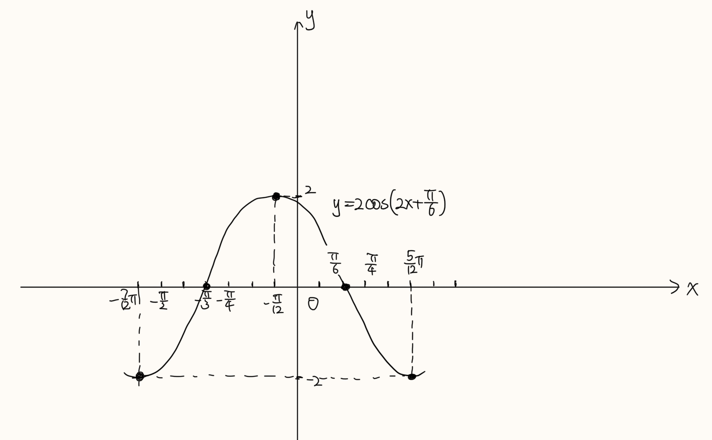
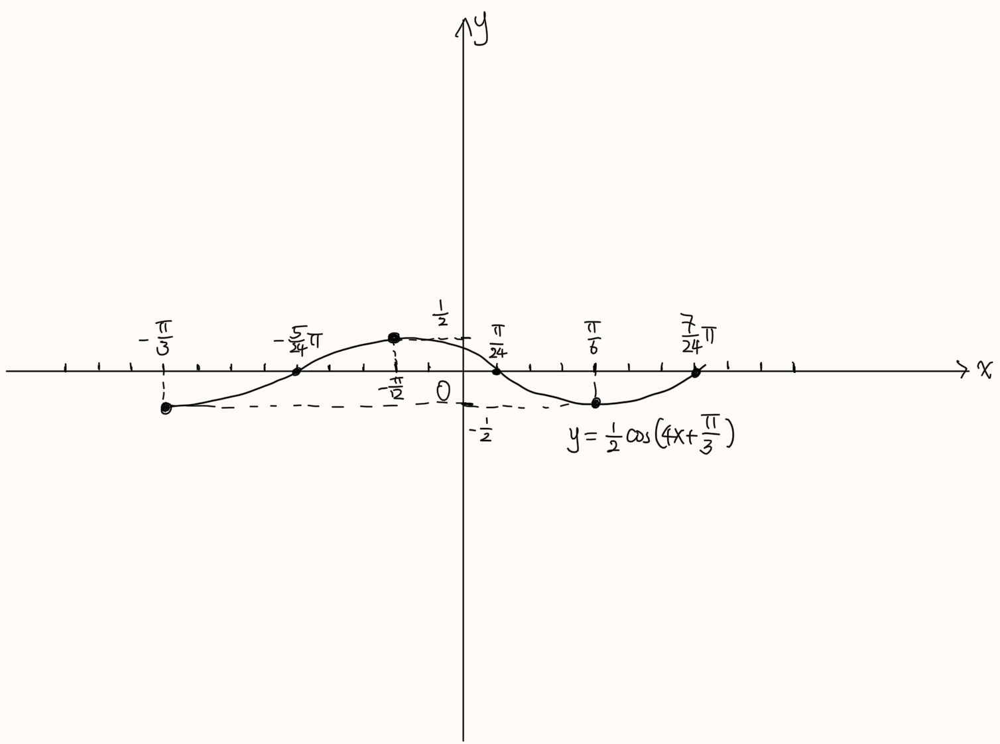

Quiz 1
| Paper A | Paper B |
Paper A
Find the domain and range of the function \(f(x)=\frac{1}{\sqrt{3-x}+\sqrt{x+2}}\).(10 points)
6 points on the domain, and 4 bonus points on the range of this function. It's not easy to find the range and requires some detailed computations and tricks.
To find the domain of \(f\), note that \(f(x)=g\circ h(x)\) where \(g(y)=\frac{1}{y}\) and \(h(x)=\sqrt{3-x} +\sqrt{x+2}\), so we must require that \(y=h(x)\neq 0\) and that \(3-x\geq 0\) and \(x+2\geq 0\). The latter conditions imply \(-2\leq x\leq 3\), and the first condition reads \(\sqrt{3-x}+\sqrt{x+2}\neq 0\), which is always the case since the only possibility for \(h(x)\) to be zero is both \(\sqrt{3-x}\) and \(\sqrt{x+2}\) are zero. This is impossible, since the first equation reads \(x=3\) while the second one implies \(x=-2\). Therefore we conclude that the domain of \(f\) is exactly \(-2\leq x\leq 3\).
To determine the range of \(f\), we need some observations. Observe that \(h(x)^2 =(\sqrt{3-x}+\sqrt{x+2})^2 =3-x+x+2+2\sqrt{(3-x)(x+2)} =5+\sqrt{-x^2 +x+6}\), and the term in the square root is a quadratic polynomial, so it has the same monotonicity as quadratic polynomials, and we read that the minimum of \(h(x)\) is the minimum of its values at two endpoints, that is, \(\min\left\{h(3),h(-2)\right\}=\sqrt{5}\), and the maximum of \(h\) is its value at \(\frac{1}{2}\), which is \(h(\frac{1}{2} )=\sqrt{10}\). Therefore the range of \(f\) is \([\frac{1}{\sqrt{10}}, \frac{1}{\sqrt{5}}]\).
Find the domain and range of the function \(f(x)=2\cos(2x+\frac{\pi}{6})\), and try to sketch the graph by hand.(25 points)
10 points for the domain and range, and 5 points for the sketch of graph. There's a bonus point for the graph because there's a mistake that many students may make.
We write \(f\) as a composition \(f=2g\circ h\), where \(g(y)=\cos y\) and \(h(x)= 2x+\frac{\pi}{6}\). Both of these two functions have domain the whole real line \(\mathbb{R}\), so the domain of \(f\) is exactly \((-\infty ,+\infty)\).
For the range of \(f\), note that the range of \(g\) is \([-1,1]\), and we scale the function by \(2\), so the range of \(f\) would be \([-2,2]\).
Finally we should determine the graph of \(f\). The problem here is that when we try to firstly multiply the variable by \(2\) and then translate the variable, the amount would not be \(\frac{\pi}{6}\) again. Actually, assume \(m(x)=\cos (2x)\), and we compute \(k(x)=m(x+\frac{\pi}{6}) =\cos 2(x+\frac{\pi}{6})=\cos (2x+\frac{\pi}{3})\), which is not the function we want. Hence the correct transformation here is \(m(x)\leadsto k(x)=m(x+\frac{\pi}{12})\), i.e. moving the graph to the left by \(\frac{\pi}{12}\) units. The final graph we get would be

Some important markers: minimum and maximum points and zeros.
Paper B
Find the domain and range of the function \(f(x)=\frac{1}{\sqrt{2-x}+\sqrt{x+3}}\).(10 points)
6 points on the domain, and 4 bonus points on the range of this function. It's not easy to find the range and requires some detailed computations and tricks.
To find the domain of \(f\), note that \(f(x)=g\circ h(x)\) where \(g(y)=\frac{1}{y}\) and \(h(x)=\sqrt{2-x}+\sqrt{x+3}\), so we must require that \(y=h(x)\neq 0\) and that \(2-x\geq 0\) and \(x+3\geq 0\). The latter conditions imply \(-3\leq x\leq 2\), and the first condition reads \(\sqrt{2-x}+\sqrt{x+3}\neq 0\), which is always the case since the only possibility for \(h(x)\) to be zero is both \(\sqrt{2-x}\) and \(\sqrt{x+3}\) are zero. This is impossible, since the first equation reads \(x=2\) while the second one implies \(x=-3\). Therefore we conclude that the domain of \(f\) is exactly \(-3\leq x\leq 2\).
To determine the range of \(f\), we need some observations. Observe that \(h(x)^2 =(\sqrt{2-x}+\sqrt{x+3})^2 =2-x+x+3+2\sqrt{(2-x)(x+3)} =5+\sqrt{-x^2 -x+6}\), and the term in the square root is a quadratic polynomial, so it has the same monotonicity as quadratic polynomials, and we read that the minimum of \(h(x)\) is the minimum of its values at two endpoints, that is, \(\min\left\{h(3),h(-2)\right\}=\sqrt{5}\), and the maximum of \(h\) is its value at \(-\frac{1}{2}\), which is \(h(-\frac{1}{2} )=\sqrt{10}\). Therefore the range of \(f\) is \([\frac{1}{\sqrt{10}}, \frac{1}{\sqrt{5}}]\).
Find the domain and range of the function \(f(x)=\frac{1}{2}\cos (4x+\frac{\pi}{3}))\), and try to sketch the graph by hand.(25 points)
10 points for the domain and range, and 5 points for the sketch of graph. There's a bonus point for the graph because there's a mistake that many students may make.
We write \(f\) as a composition \(f=\frac{1}{2} g\circ h\), where \(g(y)=\cos y\) and \(h(x)=4x+\frac{\pi}{6}\). Both of these two functions have domain the whole real line \(\mathbb{R}\), so the domain of \(f\) is exactly \((-\infty ,+\infty)\).
For the range of \(f\), note that the range of \(g\) is \([-1,1]\), and we scale the function by \(\frac{1}{2}\), so the range of \(f\) would be \([-\frac{1}{2},\frac{1}{2}]\).
Finally we should determine the graph of \(f\). The problem here is that when we try to firstly multiply the variable by \(4\) and then translate the variable, the amount would not be \(\frac{\pi}{6}\) again. Actually, assume \(m(x)=\cos (4x)\), and we compute \(k(x)=m(x+\frac{\pi}{6}) =\cos 4(x+\frac{\pi}{3})=\cos (4x+\frac{4\pi}{3})\), which is not the function we want. Hence the correct transformation here is \(m(x)\leadsto k(x)=m(x+\frac{\pi}{12})\), i.e. moving the graph to the left by \(\frac{\pi}{12}\) units. The final graph we get would be

Some important markers: minimum and maximum points and zeros.